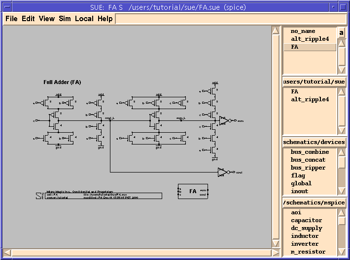
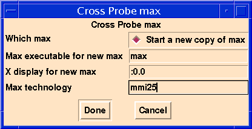
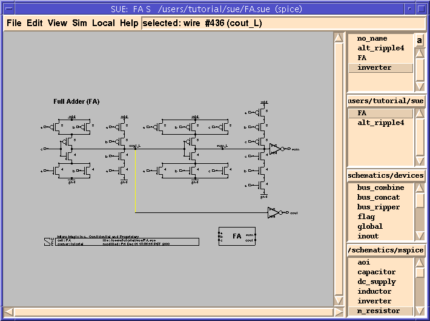
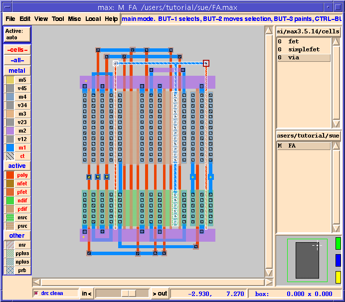

SUE Design Manager Tutorial |
Part 5
Cross-probing With MAX
- In this section we are going to bring up a schematic in SUE and a layout in MAX, the MMT full-custom layout editor. Using interprocess communication, SUE and MAX will then share data. In this case, you will be able to select any net in a schematic in SUE and tell MAX to highlight that net in the layout, and vice-versa.
- If you don't have SUE running at this time, start it, and load the
FAcell. If you are continuing from before, click on theFAcell in theSchematic Listbox. Your screen should look like Figure 31.Figure 31: "FA" Schematic

- Since cross-probing to layout is a transistor-level operation, you need to be in either
spiceorsimsimulation mode.
Figure 32: MAX Cross-Probe Popup

- SUE doesn't have to be in
simmode for this.
Figure 33: Net Selected In SUE

Figure 34: Highlighted Net In MAX

- In addition to cross-probing, MAX is a very fast and powerful, full-featured, full-custom layout editor with a complete language API. Refer to the Micro Magic Tools MAX User Guide and Micro Magic Tools MAX Tutorial (accessed from either the
Helpmenu in MAX, or from the Micro Magic Tools Documentation Guide) for more details.
- Now take your left hand and raise it over your head and pat yourself on the back. You survived the SUE tutorial, and hopefully learned a little about SUE. However, the best way to really learn SUE - or any tool - is to try it out with something you designed yourself. So go ahead, and good luck!
| ----- Micro Magic ----- |